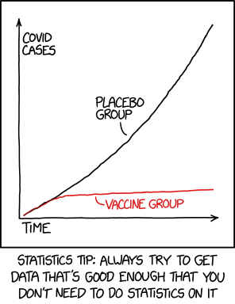
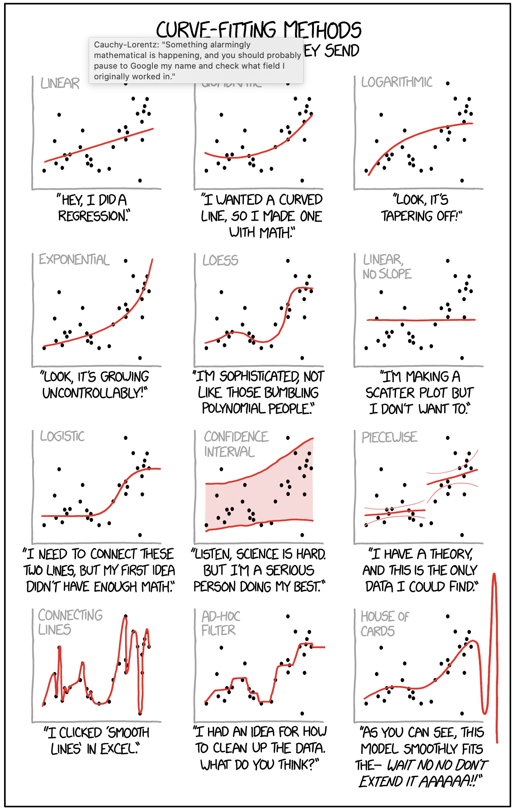
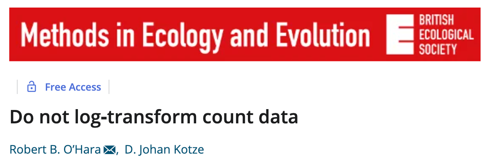
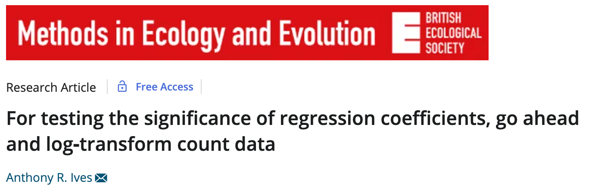
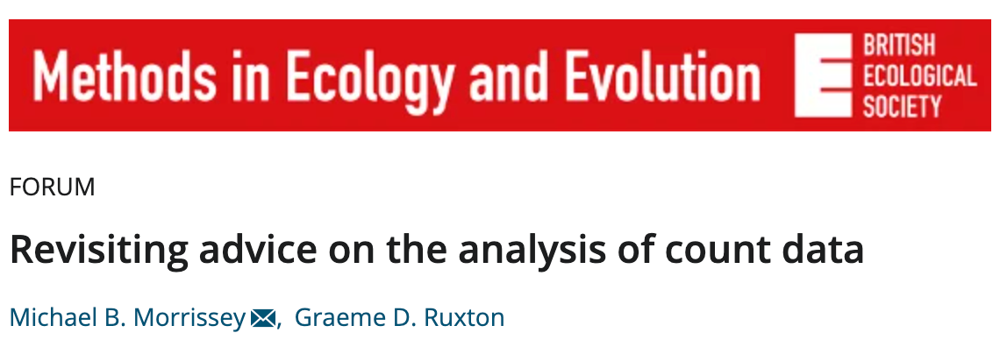
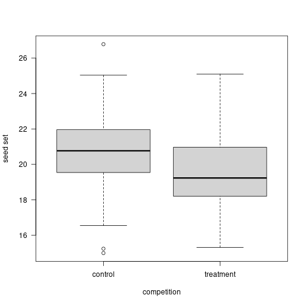
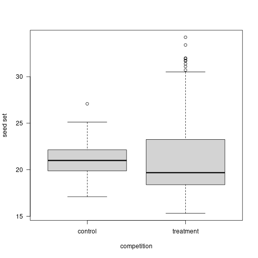

Common Sense Statistics
author: Ignasi Bartomeus date: September 2022 autosize: true
Common Sense Statistics

Common Sense Statistics
“He uses statistics as a drunken man uses lamp-posts… for support rather than illumination.” - Andrew Lang (1844-1912)
Have a question
Goal:
- exploratory analysis
- null hypothesis testing
- assessing the plausibility of different models
- interested in the model predictive power
Have a question

Do not expect statistics to be easy
- Dynamic field
- Opinionated field
- No cookbooks
“If you only have a hammer, all your problems will look like nails”
(but do not overdue it -> statistical machismo)
Do not expect statistics to be easy
 
Do not expect statistics to be easy

Be aware that statistical analysis can hardly fix a bad experimental design or poorly collected data.
“calling a statistician after the data has been collected is like calling a doctor to do an autopsia”
- Experimenta design
- Sample size
- (Power analysis)
Learn about researchers degrees of freedom
- The Garden of forking paths
- p-hacking
- Pre-registration?
Always plot your data

Always plot your data

Understand the statistical test you are performing
- model assumptions
- default parameters
- toy datasets
- interpretation
Provide the full details of your statistical analyses.
- Report all test and data manipulation
- Frequentist: P-value, sample size, estimates and associated errors (SE or CI), coefficient of determination (r2), and interpretable effect sizes.
- Do not create Post-hoc hypothesis
- Bayesian CI’s ~ p-values
Biological significance > statistical significance

Biological significance > statistical significance
Call:
lm(formula = d$values ~ d$treatment)
Residuals:
Min 1Q Median 3Q Max
-5.7940 -1.3562 -0.2033 1.2013 6.0050
Coefficients:
Estimate Std. Error t value Pr(>|t|)
(Intercept) 20.7825 0.2037 102.036 < 2e-16 ***
d$treatmenttreatment -1.0960 0.2880 -3.805 0.000189 ***
---
Signif. codes: 0 '***' 0.001 '**' 0.01 '*' 0.05 '.' 0.1 ' ' 1
Residual standard error: 2.037 on 198 degrees of freedom
Multiple R-squared: 0.06814, Adjusted R-squared: 0.06343
F-statistic: 14.48 on 1 and 198 DF, p-value: 0.0001889Biological significance > statistical significance

Biological significance > statistical significance
Call:
lm(formula = d$values ~ d$treatment)
Residuals:
Min 1Q Median 3Q Max
-6.3779 -2.6385 -0.7762 1.1683 12.5558
Coefficients:
Estimate Std. Error t value Pr(>|t|)
(Intercept) 21.1198 0.4244 49.758 <2e-16 ***
d$treatmenttreatment 0.5667 0.5695 0.995 0.321
---
Signif. codes: 0 '***' 0.001 '**' 0.01 '*' 0.05 '.' 0.1 ' ' 1
Residual standard error: 3.796 on 178 degrees of freedom
Multiple R-squared: 0.005532, Adjusted R-squared: -5.467e-05
F-statistic: 0.9902 on 1 and 178 DF, p-value: 0.321Biological significance > statistical significance

Practice Open Science and reproducibility
- Document choices (Git)
- Pair programming
- Code review
- Errors are fine as long as are honest and we catch them.
Common Sense Stastistics
- Have a question
- Do not expect statistics to be easy
- Be aware that statistical analysis can hardly fix a bad experimental design or poorly collected data
- Learn about researchers degrees of freedom
- Always plot your data
- Understand the statistical test you are performing
- Provide the full details of your statistical analyses
- Biological significance > statistical significance
- Practice Open Science and reproducibility